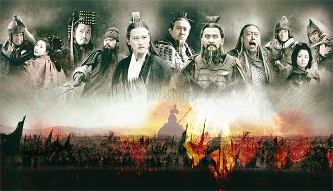

7 câu nói kinh điển chỉ có trong Tam Quốc Diễn Nghĩa, gói gọn trí tuệ nhân sinh
1. Tào Tháo – “Ta thà phụ người chứ quyết không để người phụ ta”
Câu nói này được Tào Thào nói với Trần Cung khi Trần Cung hỏi Tào A Man rằng: tại sao lại giết cả Lã Bá Sa mặc dù biết được gia đình ông ta không hề có ý định hãm hại mình, mà trái lại còn bày tiệc chiêu đãi? Nó thể hiện một góc tính cách của ông: man trá, lạnh lùng đến đáng sợ.
Tào tháo, một gian hùng nhưng cũng là một anh hùng, luôn mang trong mình tư tưởng đa nghi. Vốn sinh ra tài giỏi hơn người, tính tình hào hoa phóng đãng nhưng nhiều mưu mẹo, có tài dụng quân, cai trị thiên hạ.
Việc ông giết cả nhà Lã Bá Sa âu cũng chỉ vì bất đắc dĩ, do giải nhầm những “tín hiệu” trong đêm, lúc tâm ông không tĩnh, vì đang bị truy sát, mà tưởng là kẻ thù đã đến nên mới ra tay tàn độc đến thế. Nhưng tự sâu thẳm Tào Tháo không hề muốn (sau này, khi xem cách ông nhìn nhận và trọng dụng nhân tài là biết), nhưng vì quá đa nghi và thông minh mà ông mới có nét tính cách “nguy hiểm” đến vậy.
2. Gia Cát Lượng – “Mưu sự tại nhân, thành sự tại thiên. Số trời đã định, không thể cưỡng lại”
Một trong những người được vinh danh muôn đời sau không ai khác là Gia Cát Lượng, phò tá của Lưu Bị. Sự kiệt xuất của ông khiến kẻ thủ phải cúi đầu kính nể, hậu thế phải nghiêng mình bái phục qua rất nhiều điển tích, trận đánh lớn.

“Mưu sự tại nhân, thành sự tại thiên” – Số trời đã định, làm sao cưỡng lại! Kỳ nhân như Gia Cát Lượng ngàn năm khó kiếm, mang trong mình trí huệ tuyệt vời của người tu Đạo, được mệnh danh là “liệu sự như Thần”, tức chỉ có thể là “Thần” mới tính được đến mức ấy, là người thì không thể!
Ấy vậy mà trong cuộc đời ông, ông cũng không thể nào tránh khỏi “thiên ý”, vốn là sự sắp đặt của định mệnh, của những sinh mệnh tầng cao hơn hẳn ông, vốn đã “an bài” toàn vẹn trật tự xã hội, sự thịnh suy của các triều đại, và của cả từng cá nhân mỗi một con người…
3. Lưu Bị – “Thà chết chứ không làm chuyện bất nhân bất nghĩa”
Song hành cùng Gia Cát Lượng trong cuộc hành trình chinh phạt Tào Nguỵ là Lưu Bị với triết lí sống ngược lại Tào Tháo: “Thà chết chứ không làm chuyện bất nhân bất nghĩa”.
Chính vì điều này nên Lưu Bị, mặc dù chỉ là anh bán dép ngoài phố, đã lấy lòng được các anh hùng trong thiên hạ như 2 anh kem Trương Phi – Vân Trường, “thần nhân” Gia Cát Lượng, Triệu Tử Long, Mã Siêu, Hoàng Trung,… và hàng ngàn hàng vạn dân chúng thời bấy giờ, lập nên đại nghiệp hùng tráng, chấn động lịch sử.
4. Chu Du – “Trời sinh Du sao còn sinh Lượng”
Trong “Tam Quốc diễn nghĩa”, Chu Du là đại danh từ tượng trưng cho lòng dạ hẹp hòi, không chịu thua ai, cũng chỉ khi ông ta bệnh nặng vô phương cứu chữa, không còn sống được bao lâu nữa, mới cảm khái mà thốt ra câu nói này từ tận đáy lòng.
Chỉ có điều là câu nói này quá tự ti, tôn vinh chí khí của Gia Cát Lượng, mà hạ mất uy phong của chính mình. Khiến cho hình tượng của hai người này đã định rõ vị trí trong đầu của mọi người mãi về sau. Thực chất, lịch sử cũng giống như một màn kịch, và để con người có thể hiểu thế nào là thiện-ác, đúng-sai, tốt-xấu thì đều cần người đến đễ “diễn” một phen, mới thấu tỏ được hàm nghĩa của từ đó.
5. Triệu Vân – “Ta là Thường Sơn Triệu Tử Long!”
Trong trận Đương Dương-Trương Bản, Triệu Vân một mình đánh tan hàng vạn vạn quân của Tào Tháo mặc dù đang buộc A Đẩu-con trai của Lưu Bị trên ngực,khiến cho Tào Tháo vô cùng thán phục: "Người này là ai? Từ lúc Lữ Bố ra đi, ta chưa thấy một vị tướng nào dũng mãnh như vậy"
Đây là câu nói hăng say nhất đối với những ai hâm mộ Triệu Vân hay Triệu Tử Long, nguyên là trong “Tam Quốc diễn nghĩa”, Triệu Vân không phải là đối tượng được tác giả tập trung miêu tả, nhưng vì mỗi lần ông ra trận đều là tư thế hiên ngang hùng dũng, đánh đâu thắng đó, có thể được một câu khẳng định của Lưu Bị như vậy, tất nhiên là quá là vui mừng rồi!
6. Tuân Úc – “Tào Tháo biết sai, sửa sai, nhưng không nhận sai”
Trong một lần Trình Dục chỉ ra rằng chủ công (Tào Tháo) đã mắc sai lầm khi thả Lưu Bị đi, cần dẫn quân tiêu diệt ông để trừ hậu hoạ. Thì Tháo lại nói rằng mình đúng không sai, làm Dục cảm thấy rất khó chịu.
Đang đi về gặp Tuân Úc, Úc nghe Dục nói xong thì bảo Dục rằng: “Tôi cho ngài biết, thực ra trong lòng chủ công đã biết mình sai, sau này người sẽ thay đổi, nhưng người tuyệt đối sẽ không nhận là sai. Kẻ làm chủ công chính là biết sai, sửa sai, không nhận sai“.
7. Tào Tháo – “Mọi mỹ nhân trong thiên hạ đều tầm thường đối với ta, chỉ có vợ của kẻ thù mới làm ta thích thú"
Ngụ ý của câu nói này là Tào Tháo muốn những thứ mà kẻ thù có cũng như muốn nắm được điểm yếu của kẻ thù